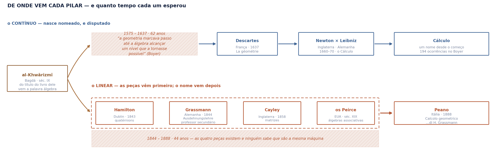
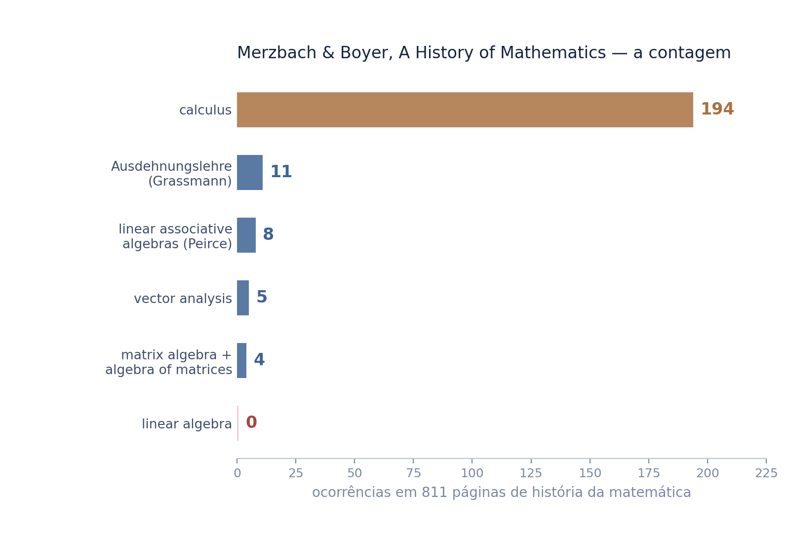
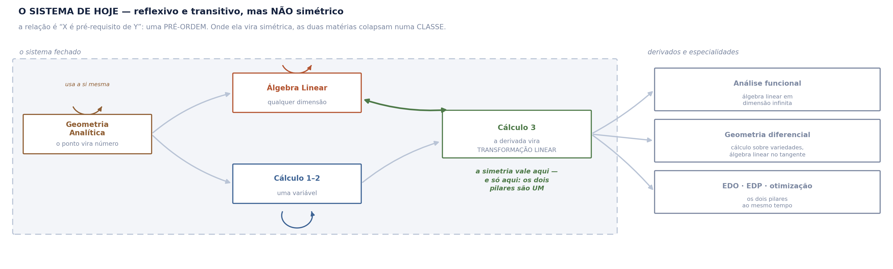
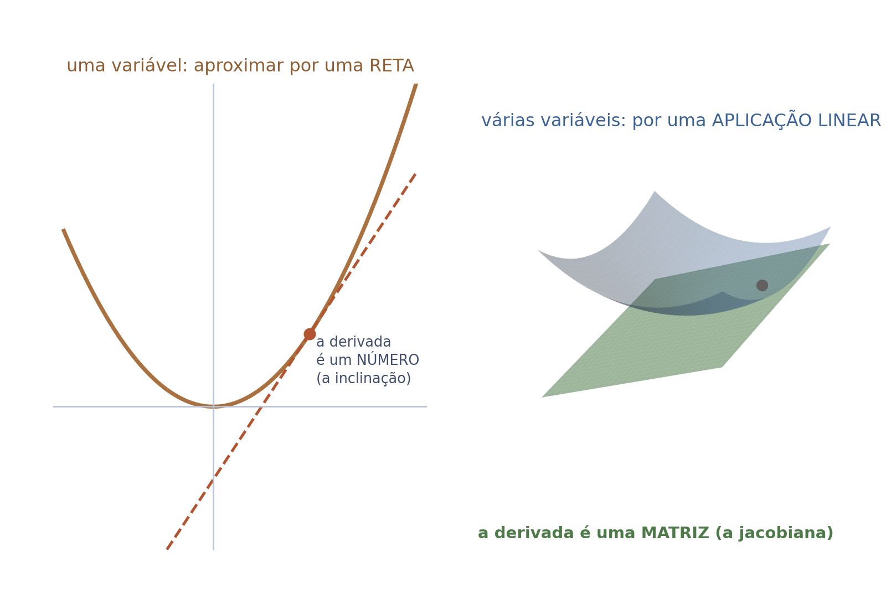
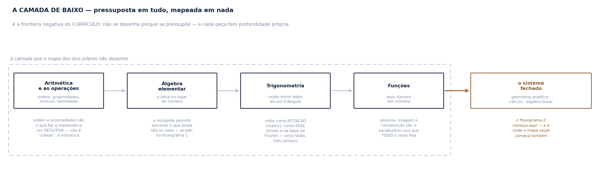
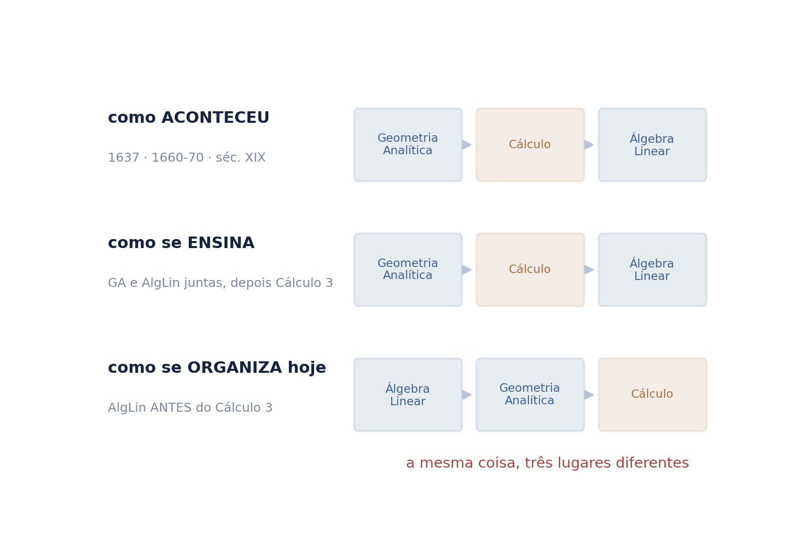

Nenhum conhecimento nasce arrumado. A ciência estuda sem saber o que está estudando, e a organização vem depois — quando alguém percebe que peças soltas eram a mesma máquina.
Logo o mapa das matérias que se ensina hoje é um estado, não uma verdade. Estes três fluxogramas mostram como ele se formou, como ele se sustenta, e o que ele deixa de fora.
A frase de partida é do prof. Rosivaldo. O recorte, a tese da fronteira e a construção são de Mateus Alkimim.
Todo conhecimento — de uma pessoa ou de um campo — tem uma fronteira positiva, o que se sabe, e uma fronteira negativa, o que não se sabe. A arrumação vem depois, e o tempo é que manda nisso.
é por isso que um mapa de matérias não pode ser lido como ordem de descoberta: ele é o desenho de quem já sabe o fim.
A régua da casa manda levantar a vizinhança antes de afirmar novidade. O vizinho existe e se chama: Lakatos, em Proofs and Refutations (1976), mostra que a definição vem por último — remendada à luz de provas que falharam.
A diferença é de escala, e é ela que sustenta o material: Lakatos descreve a vida de um conceito; aqui se descreve a arquitetura de um campo, e se usa isso como critério para desenhar mapa. Citar Lakatos fortalece; omiti-lo seria o defeito.
As datas correm da esquerda para a direita. As duas faixas hachuradas são esperas: tempo em que a matéria não andou porque dependia de outra que ainda não existia.

Na faixa de baixo as quatro peças não se ligam entre si — e essa ausência é o conteúdo: Hamilton, Grassmann, Cayley e os Peirce não sabiam que eram a mesma máquina.
Foi Peano, em 1888, quem as juntou num sistema de axiomas, e o título do livro dele credita Grassmann — quarenta e quatro anos depois. Datas e nomes conferidos no Boyer; o Peano de 1888, conferido também em segunda fonte independente.
No Boyer dissecado — 811 páginas equivalentes, a história canônica da matemática — a palavra calculus aparece 194 vezes. linear algebra aparece zero.
Não é lacuna do livro: é que o nome não existia. O que existia eram cinco nomes para pedaços — Ausdehnungslehre, quatérnions, álgebra de matrizes, álgebras associativas lineares, análise vetorial.
a Álgebra Linear não foi descoberta: foi nomeada depois, quando se percebeu que aquelas coisas eram a mesma. É a tese da fronteira em miniatura.

As três matérias formam um sistema, e a relação que as liga é “X é pré-requisito de Y”. Ela é reflexiva — toda matéria usa a si mesma — e transitiva: se A é pré-requisito de B e B de C, então A é pré-requisito de C. Mas não é simétrica.

Por isso o sistema é uma pré-ordem, e não uma relação de equivalência: o Cálculo multivariável precisa de Álgebra Linear, e a Álgebra Linear não precisa dele.
A seta dupla aparece uma única vez no diagrama — e é onde os dois pilares deixam de ser dois.
Em uma variável, derivar é aproximar por uma reta. Em várias, a derivada num ponto deixa de ser um número e passa a ser uma transformação linear — a jacobiana, a matriz das derivadas parciais.
é por isso que o Cálculo 3 não é o Cálculo 2 com mais detalhe: ele não existe sem Álgebra Linear.
E a fusão continua depois: análise funcional é álgebra linear em dimensão infinita; geometria diferencial é cálculo sobre variedades com álgebra linear no espaço tangente.

Abaixo dos dois pilares há uma camada que quase nenhum mapa desenha — e não por ser simples. É por estar em tudo.

Cada peça tem profundidade própria: trigonometria não é “seno e cosseno”, é a razão que volta como rotação, como fase e na base de Fourier.
E as propriedades das operações são o que faz a matemática ser dedutiva — o que a torna ciência, e não contagem. Esta é a fronteira negativa do currículo: o que não se mapeia porque se pressupõe.
Os mesmos três objetos, ordenados de três maneiras — e as três discordam. A ordem histórica põe Descartes em 1637. A curricular põe o Cálculo antes. A lógica de hoje põe a Álgebra Linear antes do Cálculo 3.
“Entre a morte de Maurolico, em 1575, e a publicação de La géométrie por Descartes, em 1637, a geometria marcava passo até que os desenvolvimentos em álgebra alcançassem um nível que tornasse possível a geometria algébrica.”
Boyer. A geometria esperou a álgebra — e quem olha só o currículo não vê isso.

a história · o sistema · a base
Os três fluxogramas dizem a mesma coisa por caminhos diferentes: o que hoje parece arquitetura foi, em cada época, peça solta.
Nomear o mapa como datado não o enfraquece. É o que permite ensiná-lo sem fingir que a ordem do currículo é a ordem das coisas — e é o que deixa espaço para o que ainda não tem nome.